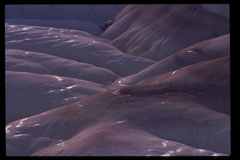
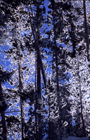

Jan Kanter Photographs
Hieroglyph |
Land of Dreams |
Sun Shower |
Ruby Leaves |
Winged Jewel |
Before Morning Coffee |

Passage of Time |
Granite Playground |
Strange Geometry |
Cool World |
Winter Lace |
Inside the Sun |
Little Frog |
Hall of Mosses |

Ornament |
Cellular Landscape |
Incandescence |
Northern Forest |
Dancing Leaves |

Wild Lupines |
The Flood |

Meadow Anemone |
Morning Walk |
Cactus Flower |
Emerald Forest |
Winter Rill |
Crystal City |
Winter Light |
Earth's Crown |
Into the Night |
Leaf Painting |
Mossy Forest |
Among the Clouds |
Opalescent Pool |
Snowy Stream |
White Sands |
Seedling |
Alternate States |
Symmetry |
Water Lilies |
Blue Allium |
Snow Clouds |
Formal Landscape |
Deciduous Fantasy |

Wooden Gargoyle |
Elegant Rocks |
Snow Bunny |
Graphic Landscape |
Snow Wraiths |

The Gathering |
Fallen Angel |
Fluffyland |
The Forest Floor |
Morning Light |
Autumn Fantasy |
Trees at Dawn |

Bentonite Hills |
A Wall of Green |
Stone Rainbow |
Poison Moon |
Asteroidea |
Sunrise |
Swans and Geese |
Sugar Maple |
Star and Comet |

Frosty Trees |
Spider Town |
Meadowhawk at Daybreak |
Fall Colors |
Touch-Me-Not |
Ferns |
Trillium |
Web Abstract |
Extravaganza |
Trumpeter Swans |
Smiling Elk |
Camouflaged Cat |
Artist's Statement
Jan Kanter (1940-2024) was a Chicago photographer with a special
interest in nature. Although she enjoys city life and
people's activities, most of her images show few signs
of human presence. She travels many miles to find lush
bluestem grasslands, ferny forests, theatrical trees
and rocks, lava fields, and other magical settings.
Some of her photographs show emotional landscapes that
suggest joy, tranquility, desolation, or chaos. Many
are small scenes--chance arrangements of twigs, small
frogs on leaves, water droplets, the shadows of dune
grasses.
In addition to her nature studies, Kanter also loves
the wonderful shapes found at industrial sites, such
as storage tanks, pipes, wiring, walls of windows,
metal catwalks, and other industrial forms. Chicago
has hundreds of interesting bridges, factories, and
other structures that are fun to photograph. And, of
course, there are the fabulous items to be found on
the road--mysterious buildings, prophetic clouds,
amusing signs, and plaster rhinoceroses.
Some of the photographs in this collection are from
Jan Kanter's series "Jewels of the Forest." She
also has worked on several other series, including
"Landscapes of the Mind," "The Poetry of Grass," and
"Ephemera."
Prices available upon request.
Contact: jan@jankanter.com
Copyright 2024
{kind=link}
{kind=link}
{kind=link}
{kind=link}
{kind=link}
{kind=link}

{kind=link}
{kind=link}
{kind=link}
{kind=link}
{kind=link}
{kind=link}
{kind=link}

{kind=link}
{kind=link}
{kind=link}
{kind=link}

{kind=link}

{kind=link}
{kind=link}
{kind=link}
{kind=link}
{kind=link}
{kind=link}
{kind=link}
{kind=link}
{kind=link}
{kind=link}
{kind=link}
{kind=link}
{kind=link}
{kind=link}
{kind=link}
{kind=link}
{kind=link}
{kind=link}
{kind=link}
{kind=link}
{kind=link}
{kind=link}

{kind=link}
{kind=link}
{kind=link}
{kind=link}

{kind=link}
{kind=link}
{kind=link}
{kind=link}
{kind=link}
{kind=link}
{kind=link}
{kind=link}
{kind=link}
{kind=link}
{kind=link}
{kind=link}
{kind=link}
{kind=link}
{kind=link}
{kind=link}
{kind=link}
{kind=link}
{kind=link}
{kind=link}
{kind=link}
{kind=link}
{kind=link}
{kind=link}
{kind=link}
{kind=link}
{kind=link}